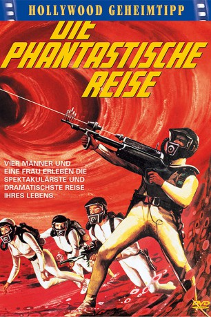

#8753 Die Phantastische Reise
Alternativ: Fantastic Voyage
Auszeichnungen: 2 Oscars gewonnen für 3 Oscars nominiert
 
 IMDB-Wertung: 6.8 / 10
IMDB-Wertung: 6.8 / 10  Metascore: 0
Metascore: 0 
Um das Leben und Wissen eines aus dem Ostblock geflohenen Diplomaten zu retten, entschließen sich amerikanische Wissenschaftler zu einem gewagten Experiment: Ein auf Zellgröße geschrumpftes, bemanntes High-Tech-U-Boot soll in den Blutkreislauf eindringen und das lebensbedrohende Blutgerinnsel sozusagen vor Ort bekämpfen. Da das U-Boot nach einer Stunde zu alter Größe wächst, ist die Zeit knapp bemessen. Gefahr droht zudem von allen Seiten, denn weder ist das Verfahren bisher erprobt, noch schlafen die feindlichen Agenten.
Jahr: 1966
Dauer: 100 Minuten
FSK: 12
Land: USA Studio: Twentieth Century-Fox Film CorporationTonspuren: DTS - ,
Untertitel: Deutsch,
Auflösung: 1080p (1920x816) Größe: 9175 MB
Genre: Sci-Fi, Abenteuer, Familie
Regisseur:  Richard Fleischer
Richard Fleischer
Drehbuch: Harry Kleiner
Soundtrack: Leonard Rosenman
Darsteller:
Datei: X:\1966\Phantastische Reise, Die (1966, FSK12, 1920x816).mkv seit 27.04.2018
Festplatte: HD 1900-1970
 Es gibt insgesamt 27 Filme in der Gruppe '1966'
Es gibt insgesamt 27 Filme in der Gruppe '1966'